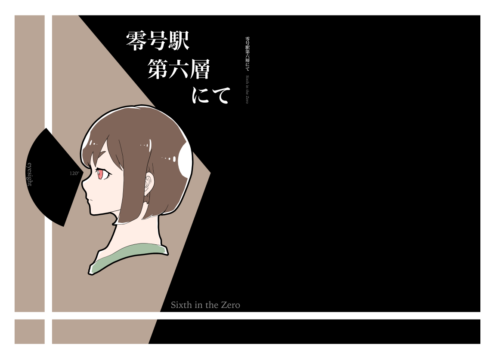

概要
- A5 二段組 76ページ
- ライトノベル
- 本文サンプル
- 買える場所
内容
かつては巨大駅で今は街となった零号駅、その第六層。 寂れた古物商に持ち込まれた奇妙なネックレス、後輩につれられての廃墟探索。
そんな感じの奇譚な短編と、ちょっと恋で小さな掌編の二本立てです。
表紙

かつては巨大駅で今は街となった零号駅、その第六層。 寂れた古物商に持ち込まれた奇妙なネックレス、後輩につれられての廃墟探索。
そんな感じの奇譚な短編と、ちょっと恋で小さな掌編の二本立てです。
